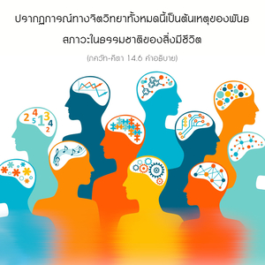

โอ้ ผู้ไร้บาป ระดับความดีบริสุทธิ์กว่าระดับอื่น เพราะจะส่องแสงสว่างและทำให้เป็นอิสระจากผลบาปทั้งปวง พวกที่สถิตในระดับนั้นอยู่ในพันธสภาวะด้วยความรู้สึกว่ามีความสุขและมีความรู้




สิ่งมีชีวิตอยู่ภายใต้สภาวะของธรรมชาติวัตถุมีหลายลักษณะ พวกหนึ่งมีความสุข อีกพวกหนึ่งตื่นตัวมาก และอีกพวกหนึ่งหมดหนทางที่จะช่วยเหลือได้ ปรากฏการณ์ทางจิตวิทยาทั้งหมดนี้เป็นต้นเหตุของพันธสภาวะในธรรมชาติของสิ่งมีชีวิต พวกเขามาอยู่ภายใต้สภาวะที่แตกต่างกันได้อย่างไรได้อธิบายไว้ในส่วนนี้ของ ภควัท-คีตา เรามาพิจารณาถึงระดับความดีก่อน ผลจากการพัฒนาระดับความดีในโลกวัตถุคือ จะมีความฉลาดกว่าพวกที่อยู่ในพันธสภาวะด้วยกัน พวกนี้ไม่ได้รับความทุกข์ทางวัตถุมากมายนัก และจะมีความรู้สึกว่า เจริญก้าวหน้าในความรู้ทางวัตถุ ตัวแทนของระดับนี้คือ พฺราหฺมณ ซึ่งควรสถิตในระดับความดี ความรู้สึกว่ามีความสุขเช่นนี้เนื่องจากเข้าใจว่าในระดับความดีทำให้ตนเป็นอิสระจากผลบาป อันที่จริงในวรรณกรรมพระเวทได้กล่าวไว้ว่า ระดับความดีหมายถึงมีความรู้มากกว่า และมีความรู้สึกว่ามีความสุขมากกว่า
ความยากตรงนี้คือ เมื่อสิ่งมีชีวิตอยู่ในระดับความดี เขาอยู่ภายใต้สภาวะที่มีความรู้สึกว่าตนเองเจริญก้าวหน้าในความรู้ และดีกว่าคนอื่น เช่นนี้จะทำให้ตกอยู่ในพันธสภาวะ ตัวอย่างที่ดีที่สุดคือ นักวิทยาศาสตร์ และนักปราชญ์ แต่ละท่านภูมิใจมากกับความรู้ที่ตนมี โดยทั่วไปพวกนี้จะพัฒนามาตรฐานชีวิตความเป็นอยู่ที่ดีกว่า และรู้สึกว่ามีความสุขทางวัตถุ ความรู้สึกว่ามีความสุขมากในสภาวะเช่นนี้ทำให้ถูกพันธนาการโดยระดับความดีของธรรมชาติวัตถุ และเมื่อเป็นเช่นนี้จะหลงติดทำงานอยู่ในระดับความดี ตราบใดที่ยังหลงติดอยู่กับการทำงานเช่นนี้ เขาจะต้องได้รับร่างกายในระดับต่างๆ ของธรรมชาติวัตถุ ดังนั้น จึงไม่มีโอกาสจะหลุดพ้นหรือย้ายไปยังโลกทิพย์ เขาอาจกลับมาเป็นนักปราชญ์ นักวิทยาศาสตร์ หรือนักกวีซ้ำซาก และถูกพันธนาการในสภาวะที่ได้รับโทษแห่งการเกิด และการตายเช่นเดียวกันนี้ซ้ำแล้วซ้ำอีก แต่เนื่องจากความหลงในพลังงานวัตถุทำให้เขาคิดว่าชีวิตเช่นนี้สุขสบายดี